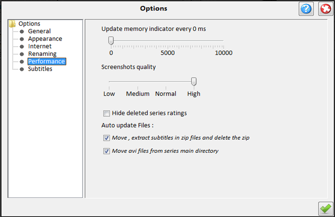

| Performance Options |
|---|
|  |
|---|
The following options are available:
-
Update memory indicator:
How often the memory indicator on the toolbar will be updated (if it's visible). Setting
this to 0 will remove the indicator from the toolbar.
-
Screenshots quality:
The quality of the series screenshots on the main application panel and on the schedule.
-
Auto Update - Files :
Auto update video and subtitle status from series directories each time you
select a series.
Auto Update - Extract :
Auto extract archived subtitles (zip, rar,7z,gzip and tar extension).This will
delete the zip file after the extraction.
|